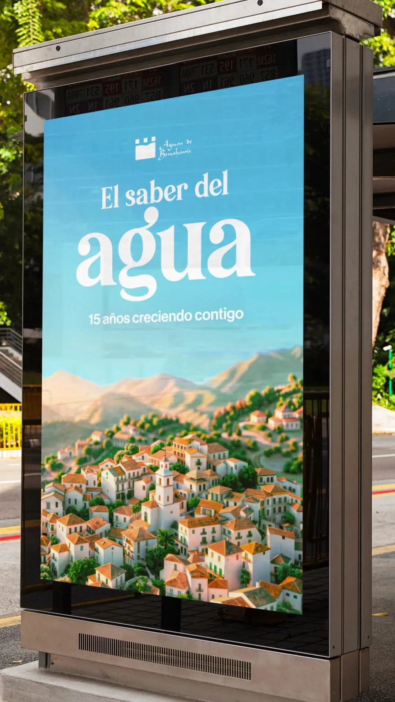
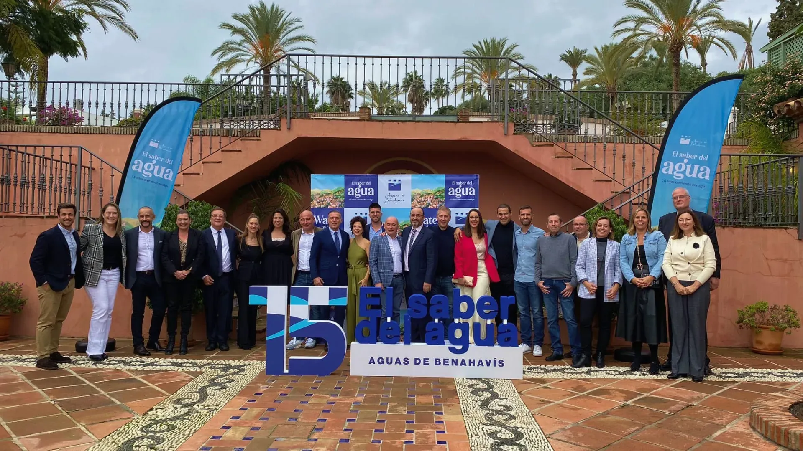

Aguas de Benahavís
Aguas de Benahavís es un proyecto que nace de la celebración y el reconocimiento. Encargado
por
Hidralia con motivo del 15º aniversario de la llegada del agua a Benahavís, este trabajo
busca
destacar algo que muchas veces damos por sentado: la importancia del agua local, su calidad
excepcional y el impacto que tiene en la vida diaria de una comunidad.
Lejos de ser una pieza meramente conmemorativa, el proyecto se concibe como una oportunidad
para
contar una historia con sentido. La iniciativa pone en valor no solo un servicio esencial,
sino
también el vínculo entre la marca, el entorno y las personas que forman parte de esa
historia.
Cada elemento visual y cada recurso narrativo están pensados para transmitir respeto por el
entorno, orgullo por lo logrado y una mirada hacia el futuro con optimismo y compromiso.
La campaña se basa en una comunicación sencilla pero potente, capaz de conectar con la
comunidad
desde una perspectiva emocional más que técnica. El agua deja de ser un concepto abstracto
para
convertirse en símbolo de vida, de identidad local y de bienestar compartido. Bajo esta
lógica,
el diseño visual se articula como un canal que potencia ese mensaje, reforzando la
percepción de
calidad, cuidado y continuidad.
Este proyecto fue desarrollado durante mi etapa en la agencia Credo, integrando estrategia,
diseño y storytelling para construir una pieza coherente, alineada con los valores de la
marca y
con una narrativa que resuena con su público objetivo. Aguas de Benahavís representa mi
capacidad para abordar proyectos con intención, sensibilidad y propósito, donde el diseño no
solo comunica una idea, sino que celebra y une.

